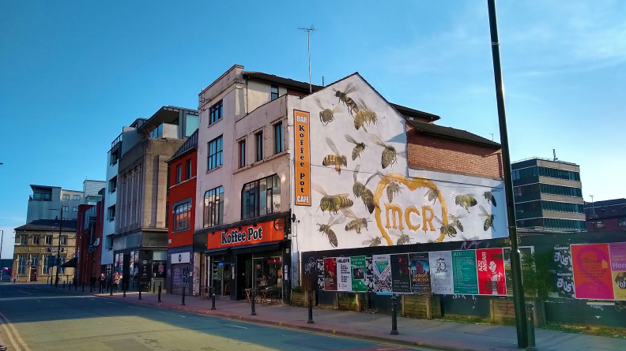

Interests
Rockclimbing
Rockclimbing, cycling and hiking are three of my favourite forms of exercise. There's an immense thrill to scrambling up vertical courses with an ever-enlarging void opening up below you, and an ever more precarious grip. Nothing quite simulates the rush of figuring out how to manipulate your body to reach a distant handhold while loosely holding yourself against a cliff face. It's an excellent physical and mental workout.
My hometown of Sunderland boasted ownership of the highest indoor rockclimbing centre in Europe, the aptly named "Sunderland Wall". While living there I visited the wall at least once a week.
I currently boulder and climb at Manchester's Climbing Depot. I try to get there at least once a week.
Podcasts
Podcasts are a fantastic source of information. They act as a programmable radio stream. Just like TV streaming, this allows us to change our consumer habits to focus on content of specific interest to us.
Below I've picked out some of my favourite podcasts in 6 areas of specific interest to me: software engineering, design, econimics, politics, sociology and LGBTQ+ issues.
-
Software Development: CodeNewbie
This show consists of interviews with coders at various points in their careers, with a focus on how they entered the industry and the lessons they've learned along the way. I've used it to keep learning while in situations that don't permit me to actively code such as when driving or doing chores.
-
Design: 99% Invisible
Undoubtedly one of the most curious podcasts I've come across, 99% Invisible tells the stories of "the unnoticed architecture and design that shapes our world". Episodes cover topics ranging from the spread of incubators for premature birth care in American fairgrounds, mysterious "number stations" which distribute strange and seemingly meaningless sequences of numbers and sounds via shortwave radio, mail-order DIY homes in 50s USA and Cynthia, the mannequin that became an influential A-list celebrity in the 1930s. I came across the show when I was learning about Kowloon Walled City; they have a brilliant episode on the topic.
-
Econimics: Planet Money
I had a huge gap in my knowledge where econimics should be so I put some effort into filling it. I read some books on the topic. I found some of them fairly frustrating, particularly those that advocated conservative neoliberal notions which seemed quite simplistic, and which assume systems would operate in an ideal manner despite ample real-life evidence to the contrary. People are complex and flexible and our behaviours can vary immensely when we're faced with unusual circumstances, and when rules are enacted to adjust our habits. Planet Money looks at real-world examples of economic theory where classical assumtions break down or, indeed, are exemplified in interesting concepts. It's a great primer in economics and it's very entertaining.
-
Politics and Sociology: Reasons to be Cheerful
Ed Milliband (previously the leader of the UK's Labour party) and comedian Geoff Lloyd invite guests to talk about progressive political and social ideas, bringing in lots of real-world examples of novel theory and practice. Topics covered include the gender pay gap, the four-day working week, fake news, land ownership, voter engagement and recognition of gender identity. The duo strike and absolutely charming tone.
-
LGBTQ+ Issues: The Sewers of Paris
In this weekly podcast Matt Baume invites a guest to speak about the media that changed their life. The guests are predominatly gay men though people of other sexualities and gender identities are also featured. Many of the episodes are excellent; the personal stories told are diverse and enlightening. One of the lighter episodes delves deep into the forgotten history of the many Wizard of Oz interpretations of the last century.
Digital Art
A few months ago I started dabbling in digital art. I've used physical media in the past but these often fail to achieve some of the sharper styles that digital art is capable of. Digital art can also reduce material costs and facilitates organisation and distribution of pieces. I draw using the open-source graphics package Krita.

Videogames
I love to get engrossed in a good puzzle or an intriguing story when I've a little free time.
Two of my favourite puzzle games are Antichamber and The Talos Principle, both of which I consumed with gusto.
I'm very fond of well-written character based stories, as well as good atmospheric horror games. SOMA ticks both of these boxes. It's one of of my all-time favourite games. To avoid spoliers I'll simply say that it's an intriguing existential horror with black comedy elements. Check it out.
I enjoy a good sandbox. Minecraft consumed a sizeable chunk of my free time when I lived in Sunderland. I'd play online with old uni friends. We'd build absurd structures, go spelunking, do silly things with the mechanics of the game. Subnautica is another exploratory sandbox that I've enjoyed a lot though I haven't completed it.
Food
I always feel like I'm cheating when i include food as an interest. Everyone eats, most people cook, and who doesn't enjoy eating out? That said, it is a sincere interest and it facilitates a lot of social activity. I also need to flesh out this section of the page!
My partner and I frequently have dinner guests. We also eat out quite frequently. It's difficult not to; there are so many good restaurants in Manchester. We're not precisely high-end though. There are plenty of tasty, resonably priced venues to choose from in the city.
Four Restaurants in Manchester
Tokyo Ramen
If you eat here, eat at the bar. You can watch the chefs prepare food while you eat. The ramen is delicious. It's served in sensibly sized but ample portions.
Wasabi
I usually describe Wasabi as a conveyor belt sushi restaurant but that doesn't do justice to the breadth of their menu. They offer a sizeable range of japanese food to order including ramen, donburi, tempura and takoyaki. The venue in Chinatown includes a dessert restaurant on the first floor.
Red & Hot

This is our go-to Szechuan hotpot spot. Szechuan hotpot is a communal cooking style in which a big pot of spicy, boiling broth is kept on the dinner table. Diners add meats and vegetables to the pot, and take them out when they're done. The food keeps rolling into and out of the pot. It's a paced, fun way to eat. The restaurant offers a wide range of ingredients to try and it all comes under a single 'buffet' price.
The Koffee Pot
 This cafe is an old favourite. Their focus is brunch; eggs benedict, croque monsieurs (et madames), reubens, brunch burgers and bloody marys. You can also get a mug of filter coffee or hot Vimto for £1. It's an excellent spot for a lazy Sunday morning.